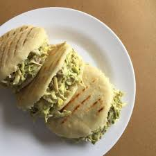

Home
Arepa Reina Pepiada

Descripction
The Reina Pepiada is a classic Venezuelan arepa, featuring a soft, golden corn bread stuffed with a creamy chicken and avocado filling. Perfect for a flavorful lunch or brunch!
Ingredients
For the dough
- 500 g precooked cornmeal (e.g., PAN)
- 800 ml warm water
- 10 g salt
For the filling
- 4 medium ripe avocados
- 150-200 g mayonnaise
- 1 squeezed lemon
- 1kg cooked chicken breasts, shredded
- 7-8 coriander sticks
- Season to taste with salt, garlic and pepper.
Steps
- In a bowl, mix the cornmeal with warm water and salt until a smooth, pliable dough forms. Divide into 4 balls and flatten into discs about 1.5 cm thick.
- Cook the arepas on a non-stick skillet or griddle over medium-high heat until golden on both sides, then bake in the oven for 10 minutes to make them crisp outside and soft inside.
- While the arepas are cooking, combine the shredded chicken with avocado, mayonnaise, lime juice, salt, and pepper until creamy.
- Slice the arepas carefully and generously fill them with the chicken-avocado mixture.